Optimal control improves coherent multi-subject generation in flow matching models. Using FOCUS at test time or via fine-tuning yields faithful compositions with correct attribute binding, minimal leakage, and no omissions, while preserving base style.
Text-to-image (T2I) models excel on single-entity prompts but struggle with multi-entity scenes, often exhibiting attribute leakage, identity entanglement, and subject omissions. We present a principled theoretical framework that steers sampling toward multi-subject fidelity by casting flow matching (FM) as stochastic optimal control (SOC), yielding a single-hyperparameter trade-off between fidelity and object-centric state separation / binding consistency. Within this framework, we derive two architecture-agnostic algorithms: (i) a training-free test-time controller that perturbs the base velocity with a single-pass update, and (ii) Adjoint Matching, a lightweight fine-tuning rule that regresses a control network to a backward adjoint signal. The same formulation unifies prior attention heuristics, extends to diffusion models via a flow–diffusion correspondence, and provides the first fine-tuning route explicitly designed for multi-subject fidelity. In addition, we introduce FOCUS (Flow Optimal Control for Unentangled Subjects), a probabilistic attention-binding objective compatible with both algorithms. Empirically, on Stable Diffusion 3.5 and FLUX.1, both algorithms consistently improve multi-subject alignment while maintaining base-model style; test-time control runs efficiently on commodity GPUs, and fine-tuned models generalize to unseen prompts.
Casts flow matching as stochastic optimal control, giving a single λ that trades off fidelity vs. subject disentanglement.
Training-free: perturbs the base velocity with one extra pass. Runs on commodity GPUs (≈12 GB VRAM).
Lightweight LoRA fine-tuning (<0.1% of weights) that regresses to a backward adjoint signal — zero inference-time overhead.
A probabilistic Jensen–Shannon objective over cross-attention distributions, scaling to any number of subjects.
Works with SD 3.5, FLUX.1, SDXL; unifies prior attention heuristics under one optimization view.
Best composite scores and highest human-preference Elo on both backbones, at test time and after fine-tuning.
We view the sampler of a flow-matching model as a controlled SDE and ask: what is the minimum perturbation that fixes multi-subject generation? Solving this with stochastic optimal control yields two architecture-agnostic recipes — a test-time controller (single-pass velocity correction) and Adjoint Matching (offline LoRA fine-tuning of a control network against a backward adjoint signal). Both are driven by the same running cost f, plug into off-the-shelf samplers, and unify prior attention heuristics (Attend&Excite, CONFORM, Divide&Bind) as special cases.
For the running cost, we exploit the fact that cross-attention maps from image tokens to subject tokens are probability distributions over spatial locations. FOCUS therefore combines a within-subject consistency term and a between-subject separation term, both expressed as normalized Jensen–Shannon divergences. The result is a loss that scales to an arbitrary number of subjects while encouraging unimodal, localized, and non-overlapping attention.
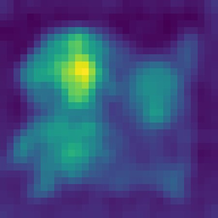
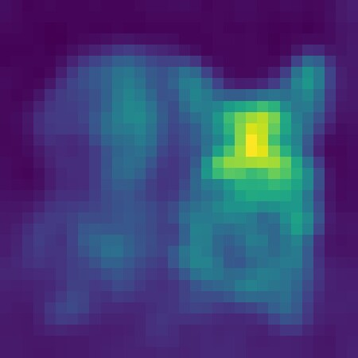
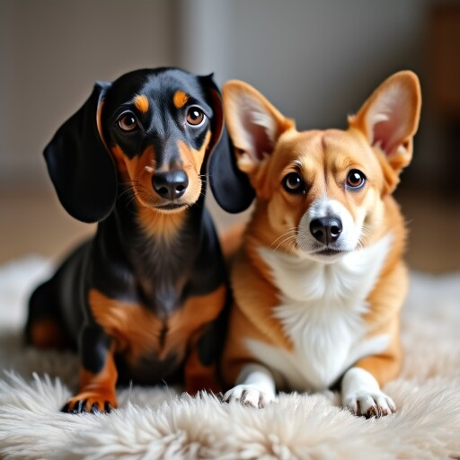
Per-subject cross-attention maps extracted from FLUX.1 [dev] for the prompt “A dachshund and a corgi sitting together on a cozy rug”. FOCUS shapes these distributions to be localized and disjoint.
All heuristics share the same sampler, seed, and prompt — only the SOC running cost changes. Each method is shown at its optimal λ.
| Base | Attend&Excite | CONFORM | Divide&Bind | Self-Cross Guidance | FOCUS (Ours) | |
|---|---|---|---|---|---|---|
| SD 3.5 |  |
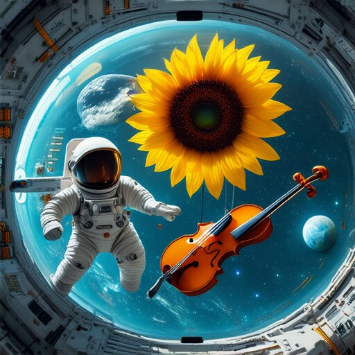 |
||||
| “An astronaut, a violin, and a sunflower floating inside a space station” | ||||||
| FLUX.1 | ||||||
| “A swan, a goose, and a duck drifting past lily pads” | ||||||
| SD 3.5 | ||||||
| FLUX.1 | 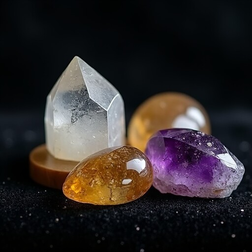 |
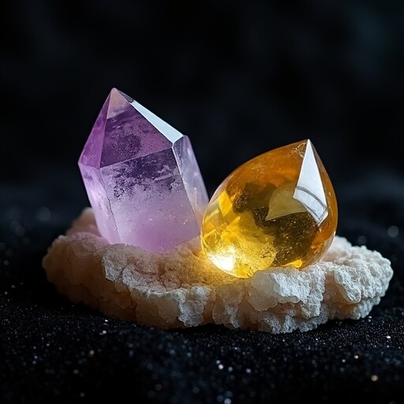 |
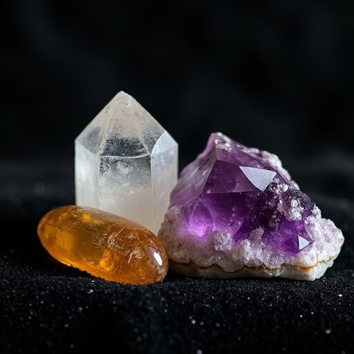 |
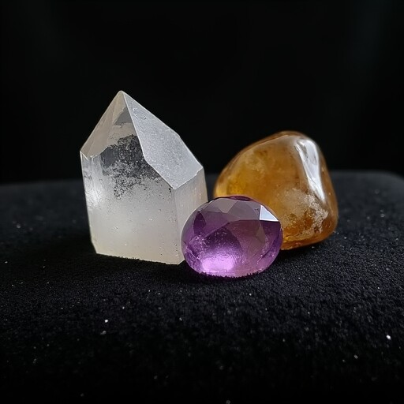 |
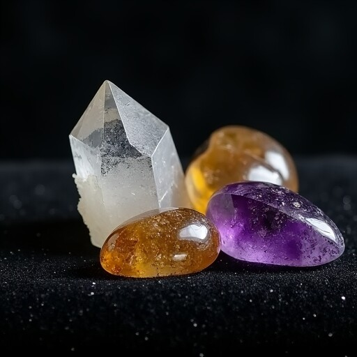 |
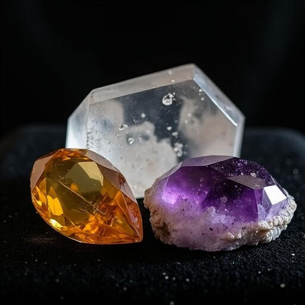 |
Each heuristic is instantiated as the running cost during Adjoint-Matching fine-tuning with rank-4 LoRA. At inference, the controller adds no extra cost.
| Base | Attend&Excite | CONFORM | Divide&Bind | Self-Cross Guidance | FOCUS (Ours) | |
|---|---|---|---|---|---|---|
| SD 3.5 | ||||||
| SD 3.5 | 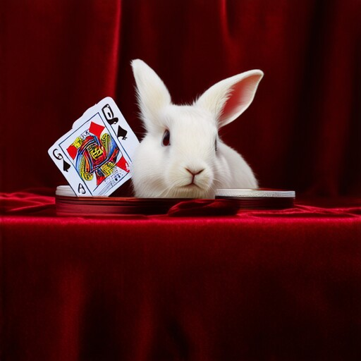 |
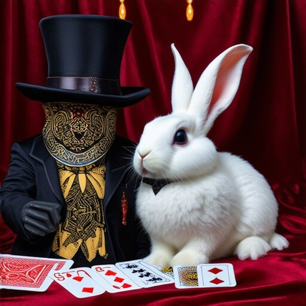 |
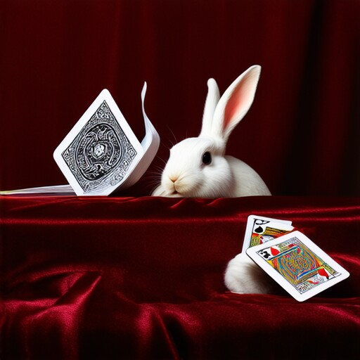 |
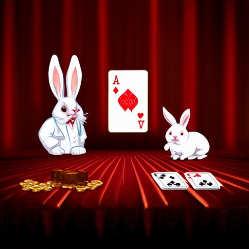 |
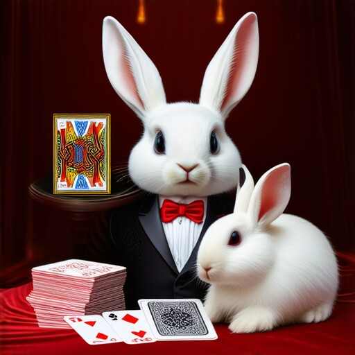 |
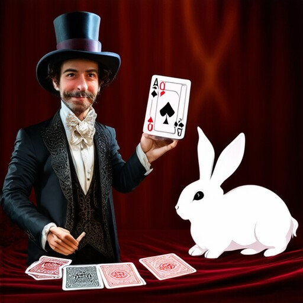 |
| FLUX.1 |  |
|||||
| FLUX.1 | 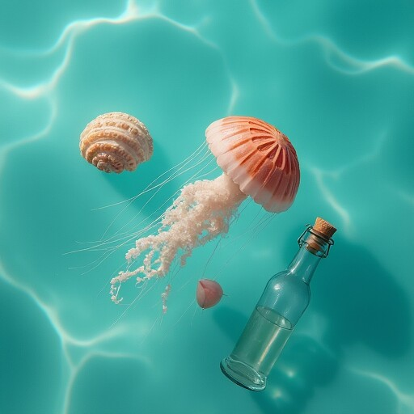 |
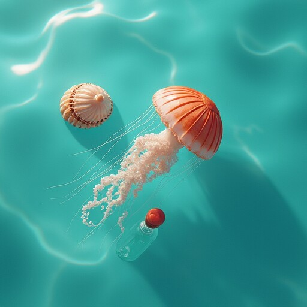 |
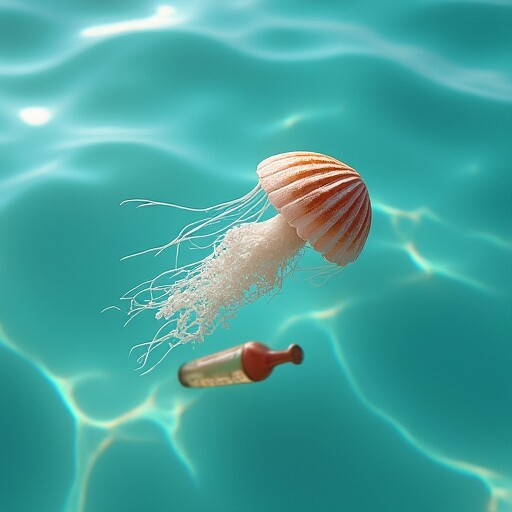 |
Mean over a 150-prompt corpus (2–4 subjects per prompt) with five seeds. Gold / silver / bronze mark the top-three values per metric. Composite = macro-average of baseline-relative gains across all metrics.
| Heuristic | CLIP I-T ↑ | SigLIP-2 I-T ↑ | BLIP T-T ↑ | Qwen2 T-T ↑ | PickScore ↑ | ImageReward ↑ | Composite ↑ | |
|---|---|---|---|---|---|---|---|---|
| SD 3.5 | Base | 0.3474 | 0.2309 | 0.5731 | 0.6402 | 22.694 | 1.3175 | 0.000 |
| Attend&Excite | 0.3484 | 0.2326 | 0.5752 | 0.6404 | 22.695 | 1.3545 | 3.171 | |
| CONFORM | 0.3481 | 0.2323 | 0.5773 | 0.6421 | 22.719 | 1.3684 | 3.434 | |
| Divide&Bind | 0.3489 | 0.2316 | 0.5742 | 0.6399 | 22.678 | 1.3493 | 3.937 | |
| FOCUS (Ours) | 0.3483 | 0.2344 | 0.5751 | 0.6385 | 22.750 | 1.4003 | 4.287 | |
| FLUX.1 | Base | 0.3449 | 0.2271 | 0.5739 | 0.6300 | 23.423 | 1.2970 | 0.000 |
| Attend&Excite | 0.3430 | 0.2242 | 0.5716 | 0.6304 | 23.255 | 1.2494 | 1.760 | |
| CONFORM | 0.3436 | 0.2252 | 0.5726 | 0.6321 | 23.357 | 1.2461 | 1.511 | |
| Divide&Bind | 0.3453 | 0.2272 | 0.5722 | 0.6330 | 23.439 | 1.2939 | 1.635 | |
| FOCUS (Ours) | 0.3446 | 0.2268 | 0.5741 | 0.6326 | 23.427 | 1.2913 | 1.971 |
| Heuristic | CLIP I-T ↑ | SigLIP-2 I-T ↑ | BLIP T-T ↑ | Qwen2 T-T ↑ | PickScore ↑ | ImageReward ↑ | Composite ↑ | |
|---|---|---|---|---|---|---|---|---|
| SD 3.5 | Base | 0.3474 | 0.2309 | 0.5731 | 0.6402 | 22.694 | 1.3175 | 0.000 |
| Attend&Excite | 0.3469 | 0.2281 | 0.5747 | 0.6425 | 22.843 | 1.4460 | 5.718 | |
| CONFORM | 0.3478 | 0.2294 | 0.5646 | 0.6393 | 22.596 | 1.3782 | 3.458 | |
| Divide&Bind | 0.3486 | 0.2266 | 0.5870 | 0.6358 | 22.340 | 1.3524 | 0.801 | |
| FOCUS (Ours) | 0.3495 | 0.2331 | 0.5744 | 0.6383 | 22.645 | 1.4495 | 5.917 | |
| FLUX.1 | Base | 0.3449 | 0.2271 | 0.5739 | 0.6300 | 23.423 | 1.2970 | 0.000 |
| Attend&Excite | 0.3468 | 0.2320 | 0.5876 | 0.6382 | 23.333 | 1.3806 | 2.348 | |
| CONFORM | 0.3458 | 0.2305 | 0.5800 | 0.6369 | 23.372 | 1.3631 | 1.959 | |
| Divide&Bind | 0.3445 | 0.2296 | 0.5705 | 0.6246 | 23.191 | 1.2269 | 0.200 | |
| FOCUS (Ours) | 0.3468 | 0.2328 | 0.5780 | 0.6386 | 23.328 | 1.3899 | 2.588 |
Pairwise preference study with 50 participants and 2,000 comparisons. FOCUS attains the highest win rates on both backbones, and the highest Elo for test-time control.
| Heuristic | SD 3.5 | FLUX.1 | |||
|---|---|---|---|---|---|
| Win % | Elo ↑ | Win % | Elo ↑ | ||
| Test-Time | Base | 45% | 1517 | 46% | 1464 |
| Attend&Excite | 53% | 1500 | 49% | 1526 | |
| CONFORM | 42% | 1373 | 50% | 1498 | |
| Divide&Bind | 50% | 1562 | 50% | 1450 | |
| FOCUS (Ours) | 58% | 1548 | 54% | 1562 | |
| Fine-tuning | Base | 39% | 1355 | 51% | 1462 |
| Attend&Excite | 56% | 1584 | 50% | 1476 | |
| CONFORM | 49% | 1520 | 50% | 1620 | |
| Divide&Bind | 48% | 1436 | 43% | 1442 | |
| FOCUS (Ours) | 57% | 1605 | 54% | 1500 | |
Composite scores when training FOCUS on subsets of the corpus. A single training prompt already yields strong gains — the SOC controller learns a broadly useful disentangling direction from very limited supervision.
| Model | 1 prompt | 15 prompts | 150 prompts |
|---|---|---|---|
| SD 3.5 | 5.917 | 3.191 | 1.682 |
| FLUX.1 | 2.588 | 2.457 | 1.810 |
@inproceedings{bill2026focus,
title = {FOCUS: Optimal Control for Multi-Entity World Modeling in Text-to-Image Generation},
author = {Eric Tillmann Bill and Enis Simsar and Thomas Hofmann},
booktitle = {CVPR 2026 Workshop on Computer Vision for Entertainment and Universal Media (CVEU)},
year = {2026}
}